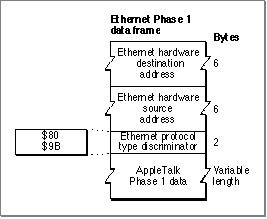
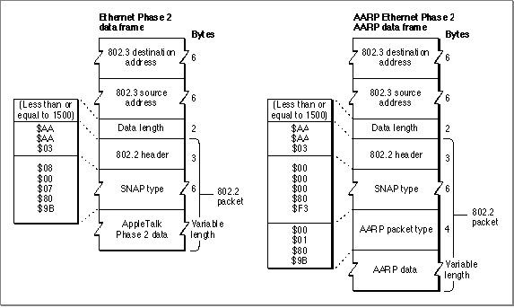
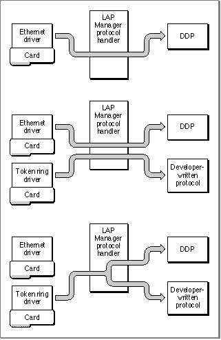

Legacy Document
Important: The information in this document is obsolete and should not be used for new development.
Important: The information in this document is obsolete and should not be used for new development.


The LAP Manager and 802.2 Protocol Packets
The Institute of Electrical and Electronics Engineers (IEEE) has defined a series of communications protocols for use on a variety of networks. At the physical level, these protocols include the 802.3 CSMA/CD protocol, the 802.4 token bus protocol, and the 802.5 token ring protocol. At the data-link level, you access these protocols through the IEEE 802.2 Logical Link Control (LLC) protocol. If you write an application that handles 802.2 Type 1 data packets, you must include a protocol handler to read the data. You can install your application as a client of the LAP Manager to receive 802.2 packets from an Ethernet, token ring, or FDDI driver.The LAP Manager includes two routines that allow you to attach and detach protocol handlers for 802.2 Type 1 data packets: the
L802AttachandL802Detachroutines. The LAP Manager contains a generic protocol handler that receives data from the hardware device drivers and determines for which application the 802.2 packet is meant based
on the protocol type. The LAP Manager's protocol handler then calls the destination application's protocol handler to read in the data. This section uses Ethernet to
illustrate how this process works; however, the same process applies to token ring and
FDDI packets.The ANSI/IEEE standards for the 802 protocols are published by the IEEE. The first
14 bytes of a packet sent or received by the .ENET driver constitute the header. The first 12 bytes consist of the destination and source data-link addresses, such as the Ethernet hardware addresses. If the value of the last 2 bytes in the header is greater than 1500, then the .ENET driver treats that field as an Ethernet protocol type discriminator; this indicates that the packet is an Ethernet Phase 1 packet. If the value of the last 2 bytes in the header is less than or equal to 1500, then the field contains the length of the 802.2 packet, not including the 14-byte header, and this indicates that the packet is an Ethernet Phase 2 packet. The .ENET driver passes all Phase 2 packets to the LAP Manager.The IEEE LLC standard defines the concept of a Service Access Point (SAP). A SAP is a 1-byte value that is used to distinguish the different protocols using 802.2 in a single node. Most SAPs are reserved for use by IEEE standard protocols. IEEE has reserved one SAP, whose value is $AA, for use by protocols other than the standard IEEE protocols. AppleTalk and many other protocol families use SAP $AA. Because other protocol families can also use this SAP, the value of another field that contains the subnetwork access protocol (SNAP) type is used to discriminate for which protocol family a packet with a destination subnetwork access protocol value of $AA is intended.
At the physical level, a packet contains the 802.3 header, the data field of which contains either an Ethernet protocol type discriminator (for Phase 1 packets) or the 802.2 packet length (for Phase 2 packets). For all Phase 2 packets, the LAP Manager receives the entire 802.3 packet from the .ENET driver. The first 14 bytes of the 802.3 data constitute the frame header, and they are followed by the 802.2 protocol header.
The first byte of the 802.2 header is the destination service access point (DSAP). If the DSAP value is equal to $AA, then the first 5 bytes of the 802.2 data constitute a SNAP protocol type discriminator. If the SNAP type value is $00000080F3, indicating the AppleTalk Address Resolution Protocol (AARP), then the next 4 bytes of the 802.2 data constitute the AARP packet type field. AARP is not discussed at length in this book; for complete information about AARP, see Inside AppleTalk, second edition.
Figure 10-2 shows an Ethernet packet containing AppleTalk Phase 1 data. Phase 1 packets are the original version of Ethernet packets. The last 2 bytes in the header contain a value greater than 1500, indicating that this field is to be treated as a
protocol type discriminator.Figure 10-2 Ethernet Phase 1 packet formats

Figure 10-3 shows two Phase 2 packets. For Phase 2 packets, the last 2 bytes of the
802.3 header contain the 802.2 packet length, not including the 14-byte header; the
802.2 packet length is a value from 0 through 1500.The data frame on the left shows an Ethernet 802.3 packet containing an 802.2 packet that holds AppleTalk Phase 2 data. The Ethernet driver would deliver this entire packet to the LAP Manager; the 802.2 packet is enclosed in the 802.3 packet, which is also referred to as a frame. The data frame on the right shows an Ethernet 802.3 packet containing an 802.2 packet to be delivered to the Phase 2 Ethernet AARP handler;
the SNAP type value is $00000080F3, indicating the AppleTalk Address Resolution
Protocol (AARP).Figure 10-3 Ethernet Phase 2 packet formats

When you call the
L802Attachroutine, you provide a pointer to your protocol handler, the reference number of the .ENET driver, and a pointer to a string containing one or more type fields. The type fields indicate the DSAP value and any other protocol type fields (such as the SNAP type and the AARP type). The LAP Manager delivers to your protocol handler any 802.2 data packets that have the protocol type you specify.Attaching and Detaching 802.2 Protocol Handlers
You must use the LAP Manager to attach your protocol handler for 802.2 protocols to receive Ethernet Phase 2 packets and all token ring and FDDI packets.The LAP Manager is designed to install a generic protocol handler that receives packets from the hardware device drivers for 802.2 protocols and that also serves as a dispatcher. The LAP Manager's protocol handler maintains an index of registered protocol types and pointers to their protocol handlers. When an application calls the LAP Manager to attach a protocol handler, the LAP Manager adds an entry for the application's protocol type and protocol handler to its protocol handler index.
The LAP Manager's protocol handler determines for which application data is meant. When processing a packet, the LAP Manager reads the destination SAP; if the SAP value is $AA, the LAP Manager then checks the SNAP header for the protocol type, and then it searches for a protocol type match in its protocol handler index. If the LAP Manager finds a protocol type match, it calls the destination application's protocol handler to read in the data. You cannot replace or override the permanent LAP Manager protocol handler.
The first time that a process or application calls the LAP Manager to attach a protocol handler for 802.2 packets, the LAP Manager calls the specified hardware device driver directly to install its own generic protocol handler. The LAP Manager then registers in its index the protocol handler and the protocol type for the process that initially called it. When a process or application subsequently calls the LAP Manager to attach a protocol handler to receive 802.2 packets from the same type of hardware device driver, the LAP Manager simply adds the protocol handler and protocol type information for that process to its index.
The LAP Manager allows for the concurrent use of hardware device drivers by more than one application. For example, Figure 10-4 shows three scenarios. In the first instance at the top of the figure, only AppleTalk is using the Ethernet driver to receive data; AppleTalk always uses the LAP Manager, which provides for its link independence.
In the second instance in the middle of the figure, both AppleTalk and a developer-
written application have attached their protocol handlers to the LAP Manager. AppleTalk is configured to use the Ethernet driver; when the LAP Manager's protocol handler reads a packet, it determines if the data is meant for AppleTalk, and if so, the LAP Manager calls the DDP protocol handler to receive the data. If the data is meant
for the other application, the LAP Manager calls that application's protocol handler.In the third instance at the bottom of the figure, both AppleTalk and the developer-
written application have attached their protocol handlers to the LAP Manager to receive data from the token ring driver. The LAP Manager receives the data, determines the destination, then calls the appropriate protocol handler, either the DDP protocol handler or the developer-written application's protocol handler to receive the data.Figure 10-4 Using the LAP Manager to receive data for 802.2 protocols

There are no high-level interfaces for the LAP Manager 802.2 protocol routines. You call these routines from assembly language by placing a routine selector in the D0 register and executing a JSR instruction to an offset 2 bytes past the start of the LAP Manager. The start of the LAP Manager is contained in the global variable
LAPMgrPtr($B18).Before you call these routines, you must place the reference number of the .ENET driver in the D2 register and a pointer to the protocol type specification in the A1 register. Before you call the
L802Attachroutine, you must also place a pointer to your protocol handler in the A0 register. Both routines return a nonzero value in the D0 register if there is an error.Listing 10-7 shows how to call either the LAP Manager's
L802AttachorL802Detachroutine from assembly language. To specify either of these routines, you place the routine selector in register D0, as indicated in the sample code.Listing 10-7 Calling a LAP Manager 802.2 routine from assembly language
LAPMgrPtr EQU $B18 ;entry point for LAP Manager LAPMgrCall EQU 2 ;offset to LAP Manager ; routines L802Entry EQU * ;802 routine entry MOVEQ #RSel,D0 ;place the routine selector ; in D0 MOVEQ #refNum,D2 ;place the driver reference ; number in D2 MOVE.L PHndlrPtr,A0 ;put pointer to protocol ; handler in A0 (L802Attach ; only) MOVE.L PSpecPtr,A1 ;put pointer to protocol ; specification in A1 MOVE.L LAPMgrPtr,An ;put pointer to LAP Mgr in An JSR LAPMgrCall(An) ;jump to start of LAP Mgr ; routinesFor information on the protocol type specification whose pointer you place in register A1, see "L802Attach" beginning on page 10-33.